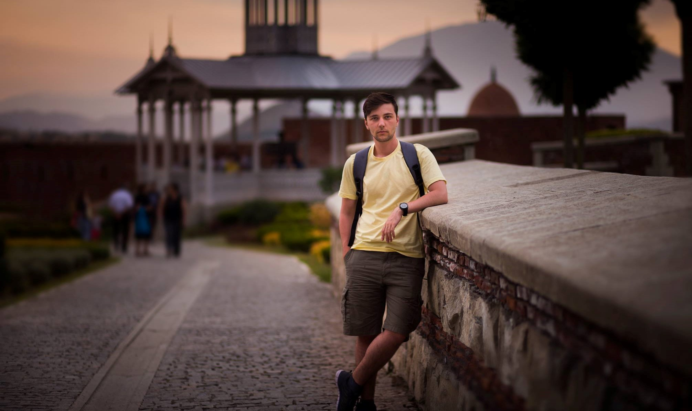

დღეს, ამ რუბრიკაში, გაგაცნობთ ჩვენი სკოლის ფიზიკის მასავლებელს გიორგი არსენაძეს, რომელიც მთელი გულითა და სულით ეხმარება ფიზიკით დაინტერესებულ მოსწავლეებს. გიორგი თავადაც ბევრს სწავლობს და ოცნებობს მომავალზე.
- რაზე ოცნებობდით პატარაობაში?
- მმმ, რთული სათქმელია, ბევრ რამეზე მიოცნებია. ზოგადად მიყვარს ოცნება, დასტრესილი დღეებიდან არაჩვეულებრივი საშუალებაა თავის დასაღწევად და სადმე ლამაზ ბუნებაში რამოდენიმე წუთით დროის გასატარებლად. პატარაობაშიც ხშირად ვერთობოდი ოცნებით. მიყვარს თევზაობა და ბუნებაში სეირნობა. შესაბამისად, ვოცნებობდი ხოლმე სხვადასხვა ცნობილ ტბაზე როგორ მივდიოდი მამაჩემთან ერთად და როგორ გადაგვხდებოდა უამრავი თავგადასავალი. როგორც წესი, ოცნებას ყოველდღიურობიდან თავის დასაღწევად ვიყენებდი და ვიყენებ, ამიტომ, ამ კითხვაში კარიერულ ოცნებებზე არ მინდა ვილაპარაკო. ისინი ერთგვარი მიზნებია. ოცნება ჩემთვის უფრო აბსტრაქტული რამაა მიუღწეველი და იდეალური, სხვა სამყაროში გადასვლისათვის მარტივი საშუალება. პატარაობაში (და ახლაც) ძალიან მიყვარდა მულტფილმები და ხშირად ვოცნებობდი პერსონაჟების ადგილზე ყოფნას. მაგალითად ქართუნ Cartoon Network-ზე გადიოდა მულტფილმი „Ben-10“ შეიძლება ახლაც გადის, არ ვიცი. მთავარ პერსონაჟს საათი ჰქონდა, რითაც უამრავ შესაძლებლობებს იძენდა, სულ მინდოდა მის ადგილას ყოფნა. კიდევ, რაც თავი მახსოვს,მინდოდა ჩრდილოეთის ციალის ნახვა, ესეც მულტფილმა შთამაგონა. ალბათ იცით „ბალტოს“ ისტორია, პირველ ნაწილში ცა არაჩვეულებრივი ფერებითაა შეღებილი. მას მერე ვოცნებობ ჩრდილოეთში იმ დროს აღმოვჩნდე, რომ “ელექტრონების წვიმა“ ვნახო. ალბათ ეს არის ჩემი ყველაზე ძველი და დღემდე შემორჩენილი ოცნება. მოკლედ, სულ ასეთ ბავშვურ, სახალისო და სათავგადასავლო რამე-რუმეებზე ვოცნებობდი ბავშვობაში.
-როდის და რატომ გადაწყვიტეთ კომაროვში ჩაბარება?
- ჩემი კომაროვში ჩაბარების ისტორია ძალიან უცნაური და ჩემი აზრით სხვებისგან განსხვავებულია. მოკლედ, ერთ მშვენიერ აპრილის დღეს ჩემი მოგობრის დედის ინიციატივით მე და ჩემმა მეგობარმა კომაროვში ჩაბარება გადავწყვიტეთ. მანამდე არც კი ვიცოდი რა იყო კომაროვი. თანაც, ამ დროს უკვე მე-7 კლასში ვიყავი. მოკლედ, სასწრაფოდ დავრეგისტრირდით გამოცდისათვის, რაღაც 2 კვირა ჩვენით წავიმეცადინეთ და გამოცდაზე გავედით. რა თქმა უნდა, ძალიან ცუდად დავწერეთ, თუმცა მსგავსი მარცხები მაძლევდა ყოველთვის მიზნის მიღწევის ძალას და გადავწყვიტე რომ აუცილებლად უნდა ჩამებარებინა გამოცდა.
განმეორებით გამოცდამდე თვეზე ცოტა იყო დარჩენილი. ამ ერთ თვეში კომაროვის მათემატიკის მე-7 კლასის მთელი მასალა გავიარეთ და გამოცდაზე გავედით. დავწერეთ ეს მეორე გამოცდაც და აღმოვაჩინეთ, რომ რაღაცები შეგვეშალა. ავტეხეთ ერთი მოთქმა, ჩამოვუშვით ცხვირები, გვეგონა ვერ მოვხვდებოდით. თუმცა, საბოლოოდ მე 39 და იმან 37 ქულა მოვაგროვეთ გამოცდაში, (40-დან) და ჩავირიცხეთ. ასე უცბად და გაუაზრებლად აღმოვჩნდით ამ არაჩვეულებრივ გარემოში. მალევე ვიგრძენი რომ არ ვიყავი საკმარისად ძლიერი. ეს ერთგვარი გამოწვევა იყო, ამასთან, გავაანალიზე, რომ ასეთი კონკურენტული გარემო როგორიც კომაროვში იყო, დიდ როლს ითამაშებდა ჩემს განვითარებაში.
-როდის გაანალიზეთ რომ ფიზიკოსობა გინდოდათ?
- ფიზიკოსობა რომ მინდოდა, დამამთავრებელ კლასში გავაანალიზე. მივხვდი, რომ ყველაზე მეტად მეცნიერება მაინტერესებდა. ამიტომ, გადავწყვიტე ფიზიკას გავყოლოდი რადგან ყველაზე ფუნდამენტური მეცნიერებაა და მეც საკმაოდ კარგად მეხერხებოდა. სხვებსაც იმავეს ვურჩევ. ხშირად აბიტურიენტები საზოგადოებაში ფართოდ გავრცელებულ პროფესიებს ირჩევენ როგორიც ბიზნეს ადმინისტრირება და ეკონომიკაა.მაგრამ, ნაკლებად იცნობენ ამ კონკრეტული სპეციალობების სპეციპფიკას.ამიტომ ყველას ვურჩევ ბევრი იფიქრონ პროფესიის არჩევის დროს და აარჩიონ ის, რაც მათ ყველაზე მეტად აინტერესებთ და ეხერხებათ.
-რას საქმიანობთ ამჟამად?
- ამ ეტაპზე თავისუფალი უნივერსიტეტის ფიზიკის ფაკულტეტის სტუდენტი ვარ. გარდა ამისა, ვცდილობ არ მოვწყდე ჩემს სკოლას და კომაროვში ვმუშაობ. ფიზიკის წრეს ვხელმძღვანელობ მე-9 და ზოგჯერ მე-11, მე-12 კლასებთან. ასევე ვცდილობ სამეცნიერო საქმიანობასაც მოვკიდო ხელი. უნივერსიტეტში მშვენიერი გარემოა იმისთვის, რომ ჩემს პროფესორებთან ერთად ვიმუშაო. შარშან ასტროფიზიკურ პრობლემაზე ნაშრომიც გამოვაქვეყნე, სადაც ვორმჰოლში ნაწილაკის დინამიკა შევისწავლე. ამ ეტაპზე კვანტური ფიზიკით ვარ გატაცებული და ამ სფეროშიც ვცდილობ პატარა კვლევის ჩატარებას. მოკლედ, ვსწავლობ, ვასწავლი და ვიკვლევ, თითქოს ნამდვილი მეცნიერი ვიყო. იმედია ერთ დღეს ვიქნები კიდეც.
-როგორ გახდით ოლიმპიელი და რა გზა გამოიარეთ ამის მისაღწევად?
- ოლიმპიელიც დაახლოებით ისევე გავხდი როგორც კომაროველი. ისევ რაღაც გამოწვევის გამო. მე-8 კლასიდან დავდიოდი ფიზიკის წრეზე. მე-9 კლასშ პირველად მომიწია ნაციონალურ ოლიმპიადაში მონაწილეობა და მოულოდნელად მე-4 ადგილი დავიკავე. ერთი მხრივ ძალიან გამიკვირდა, ეს შესაძლებელი თუ იყო არ მეგონა. მეორე მხრივ ამ შედეგმა დამაფიქრა, თუ IV ადგილზე გასვლა შევძელი პირველი ადგილიც აღარ უნდა ყოფილიყო შორი. მე-10 კლასში ოლიმპიადის მე-3 ტურამდე მივაღწიე და მაქსიმალური ქულით პირველ ადგილზე გავედი. ეს იყო რაღაც არნახული სიხარული. მგონი ასეთი ბედნიერება მას მერე აღარც განმიცდია. არაჩვეულებრივია როცა შრომა გიფასდება. მალევე კიდევ ერთხელ მოვიგე ოლიმპიადა და კომაროვი ყაზახეთის ტურნირზე წარვადგინე.
-რას აპირებთ მომავალში?
-ამ ეტაპზე ჩემი პირველი მიზანი უცხოეთში სწავლის გაგრძელებაა. მომავალ წელს დავამთავრებ ბაკალავრიატს.მეცნიერისათვის აუცილებელია დოქტორის ხარისხის დაცვა. მეც სწორედ ამას ვაპირებ. იმედია რომელიმე სახელოვანი უნივერსიტეტი მენდობა და ამიყვანს თავის კვლევით ჯგუფში. სწავლის გაგრძელება ამერიკაში მინდა, რადგან იქ მაგისტრატურა და დოქტორანტურა გაერთიანებულია. უფრო შორეულ მომავალს თუ შევხედავ ევროპის რომელიმე კარგი უნივერსიტეტის პროფესორობა მინდა. ვინაიდან, ამ ეტაპზე, საქართველოში მეცნიერება არც თუ ისე სახარბიელო მდგომარეობაშია, ამიტომ აქ მეცნიერად მუშაობას ვერ ვინატრებ.მაქვს ოცნებაც, ოდესმე ჩამოვაყალიბო ფონდი,დავეხმარო ნიჭიერ მოსწავლეებს საზღვარგარეთ ცოდნის ნიღებაში. იმედია მივაღწევ დასახულ მიზანს,ამისთვის კი მუდამ განვითარებაზე უნდა ვიყო ორიენტირებული.
-რას ურჩევდით ახლანდელ თაობას?
-რთული კითხვაა. არა იმიტომ, რომ რჩევის მიცემაა რთული არამედ იმიტომ, რომ რთული სათქმელია რამდენად იმუშავებს ეს რჩევა ადრესატზე. ჩემი გამოცდილებით, ყველა ადამიანს თავისი მექანიზმი აქვს და განსხვავებული საწვავი სჭირდება. ამიტომ, უფრო ზოგად რჩევებს მივცემ და ამ რჩევების თავის თავზე მორგება მათზე მიმინდია. ჩემი აზრით, მთავარია არასოდეს შეწვიტოთ განვითარება და მუდმივად მიზნიდან მიზანზე გადახვიდეთ. რაც მთავარია, იქონიეთ გახსნილი გონება, ყველაფერი სცადეთ,იქნებ მოგეწონოთ და გამოგივიდეთ.
-რას შეცვლიდით სასწავლო სისტემაში?
-ჩემი აზრით სასწავლო სისტემა ცუდად მუშაობს, როგორც სკოლებში ისე უნივერსიტეტებში. წესით ქვეყნისათვის განათლება ყველაზე მნიშვნელოვანი უნდა იყოს... უამრავი დეტალია ამიტომ უფრო ზოგადად ვისაუბრებ. ყველაზე სწრაფ და მარტივ გამოსავალს განათლების სისტემის დაფინანსების გაზრდაში ვხედავ, უფრო მეტად მეცნიერების დაფინანსების გაზრდაში. ყველა ევროპულ ქვეყანაში სასწავლო სისტემა მეცნიერებაზეა აგებული, ჩვენთან კი პირიქით მეცნიერება საერთოდ არ არის პრიორიტეტი. გარდა ამისა, ის მიდგომა რომ უმაღლეს სასწავლებელში აბსოლიტური უმრავლესობა უნდა აბარებდეს შესაცვლელია.
დეკემბერი, 2018
გამოცემა N1
სტატიის ავტორი: ნინი მანაგაძე